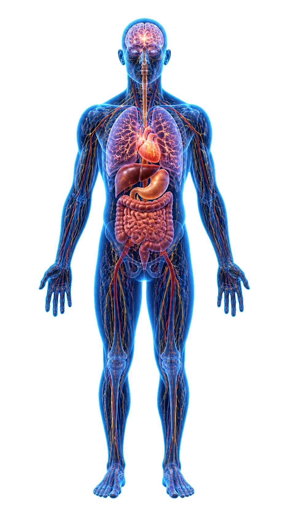

HOMEOSTASIS
Dynamic Balance
for Health & Well-Being
INTEGRATED RESEARCH PLATFORM
Core research domains advancing dynamic balance,
health, longevity & well-being.
Dynamic Balance
for Health & Well-Being
All research domains interact to shape and regulate homeostasis.
Dynamic, bidirectional communication across all systems.
Central Integration
HPA Axis Control
Support & Enhancement
THE BIOLOGY OF
Overwhelming Adaptive Capacity
Contrasting the outcomes of maintained homeostasis and disrupted homeostasis.
Adaptive Balance & Resilience

THE BIOLOGY OF
Allostatic Load & Systemic Dysregulation